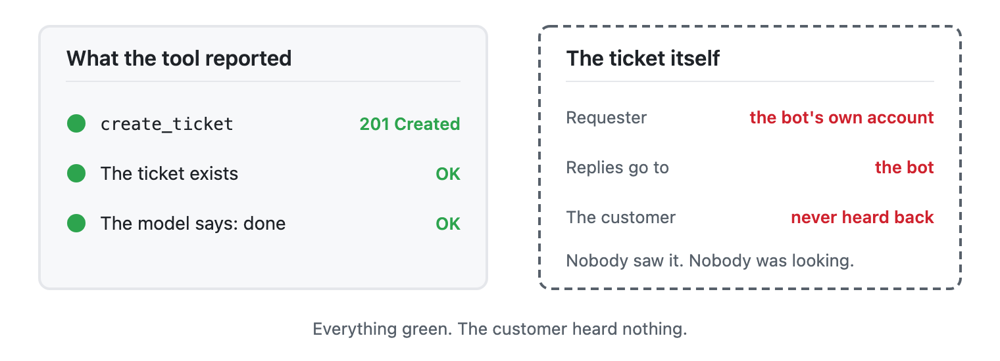

The dashboard showed a green checkmark. The AI assistant said the job was done. The result was still wrong.
Last week, I shared how an AI assistant used one of my customer support tools, left out the customer's email address, and quietly put its own system address on the form instead. Every reply went straight to the bot, while the real customer sat in the dark.
What bothered me most wasn't that the AI made a mistake. What bothered me was why nobody caught it: every single automated check along the way reported that everything was fine.
Nobody lied. Nothing crashed. Our automated check only asked whether a support ticket was created, not whether a human customer actually got a reply.

I didn't mean to stop checking. The green light on the dashboard and the AI's confident "done" were convenient, and I took them as the final answer.
Two completely different sentences
I call this the trust gap.
"The checklist is complete" and "the right thing happened" are two very different sentences. When a machine checks another machine, it is brilliant at measuring the first sentence and completely blind to the second. The result is flawless execution of the wrong goal.

We fall into the trust gap because we confuse activity with outcomes:
- Activity: The form was submitted, the database was updated, the code compiled, and the status light turned green.
- Outcome: The customer got their answer, the refund arrived in the right bank account, or the patient received their schedule.
When humans ran every step of a process, we naturally connected activity to outcome. If a form went through with a robot's email address on it, a person would notice that it looked ridiculous. Automation strips away that context while keeping all the green checkmarks.
Try the Green Light Experiment
As we hand more daily operations over to AI assistants, our dashboards are going to look greener and happier than ever. The machines will proudly report that 100% of their tasks succeeded. Our job is to make sure those green lights actually measure reality.
If you are using AI or automation in your workflow, try this experiment this week:
- Pick one report or dashboard that flashes a green "Success" light.
- Ask yourself what a successful outcome actually looks like for a real human being on the other end.
- Go check that real-world outcome, instead of the report.
I bet you will find a green light hiding a quiet mistake. What is one "Success" metric on your dashboard right now that only proves a step ran, not that a customer was helped? Tell me about it on LinkedIn.
Cheers,
Markus
No bug 🐛 too small, no syntax too weird 🔍 🧐 🔨 🦾